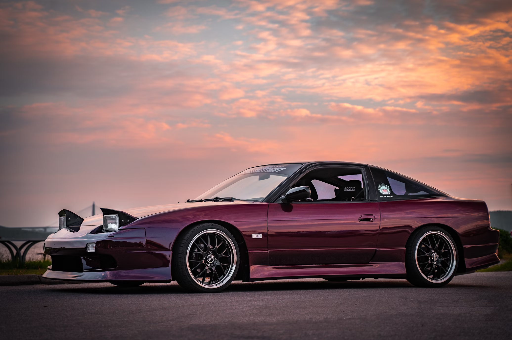

A car, also known as an automobile, is a self-propelled motor vehicle primarily used for
passenger
transportation
on land. It typically has four wheels and is powered by an engine, most commonly an internal combustion
engine
fueled by gasoline. Cars are a ubiquitous part of modern technology, manufactured on a large scale and used
worldwide.

JDM, short for Japanese Domestic Market, refers to vehicles and parts exclusively designed for
the Japanese
market, adhering to its unique regulations and standards. While JDM cars are not just sold in Japan, but
also to other countries, true JDM vehicles are those initially intended only for the Japanese market. These
cars often feature unique styling, engine options, and features tailored to the Japanese consumer, and
they've gained immense popularity and a strong following globally, especially among enthusiasts.
FOOTBALL
BarcelonaPreview: Barcelona vs Real Madrid – Prediction, Team News, Line-ups
by THEJAS P NAMBIAR. 23/05/2025
La Liga action will continue on Sunday as old enemies Barcelona and Real Madrid clash at the Estadi Olimpic
Lluis Companys in a huge match in the title race.
The Catalan giants would almost confirm their new status as champions with victory this weekend, while Real
would open the title race wide open if they manage to come away with full points.
Barcelona made the worst possible start to the game when Wojciech Szczęsny brought down Kylian
Mbappe and conceded a penalty. Mbappe duly converted the spot-kick to make it 1-0 after just three minutes.
Another goal wasn’t too far away. Lamine Yamal claimed to have been fouled after losing the ball but Madrid
simply played on and worked the ball through to Mbappe to make it 2-0 with only 14 minutes on the clock.
Barcelona were in all sorts of trouble at that point but roared back in spectacular style. Eric Garcia gave
the hosts hope when he headed in a corner, before Yamal curled home an exquisite shot to level it up.
And then it was over to Raphinha. Barca’s brilliant Brazilian was sent through on goal and slotted home
comfortably to put the hosts ahead for the first time in the match. He then pounced on a mistake to make it
4-2 just before half-time to extend Barca’s lead.
NEW PANIGALE V4
Wonder. Engineered.
by THEJAS P NAMBIAR. 23/05/2025
The new Panigale V4 represents the seventh generation in the epic saga of Ducati superbikes: a
synthesis of design and technology. A motorcycle that is at the heart of Ducati's mission: "to enrich
people's lives through a combination of technologically advanced products characterized by sensual beauty.
The 2025 Ducati Panigale V4 represents a significant evolution in Ducati's superbike lineup, blending
MotoGP-derived technology with refined ergonomics and aerodynamics to enhance both track performance and
everyday rideability.
At the heart of the Panigale V4 is the 1,103 cc Desmosedici Stradale V4 engine, now compliant with Euro5+
emission norms. This powerhouse delivers an impressive 214 bhp at 13,500 rpm and 120.9 Nm of torque at
11,250 rpm, ensuring a thrilling ride for enthusiasts . The engine is paired with a six-speed gearbox
featuring Ducati's innovative Quick Shift 2.0 system, making gear shifts quicker and more precise.
ETAuto.com
+6
mint
+6
BikeWale
+6
@EconomicTimes
Ducati has introduced a conventional double-sided swingarm, replacing the previous single-sided design. This
new assembly is 2.7 kg lighter, improving the bike's agility and handling . The chassis has also been
updated with a modified Front Frame, designed to enhance handling and stability .
mint
+3
CNBCTV18
+3
Team-BHP.com
+3
ETAuto.com
In terms of suspension, the standard Panigale V4 is equipped with fully adjustable 43 mm Showa BPF forks at
the front and a fully adjustable Sachs monoshock at the rear. The V4 S variant, however, boasts premium
Öhlins NPX front forks and an Öhlins TTX36 rear shock, enhancing ride dynamics and adjustability .
Additionally, the V4 S benefits from forged aluminium wheels, which contribute to weight reduction, making
it 4 kg lighter than the standard model ."